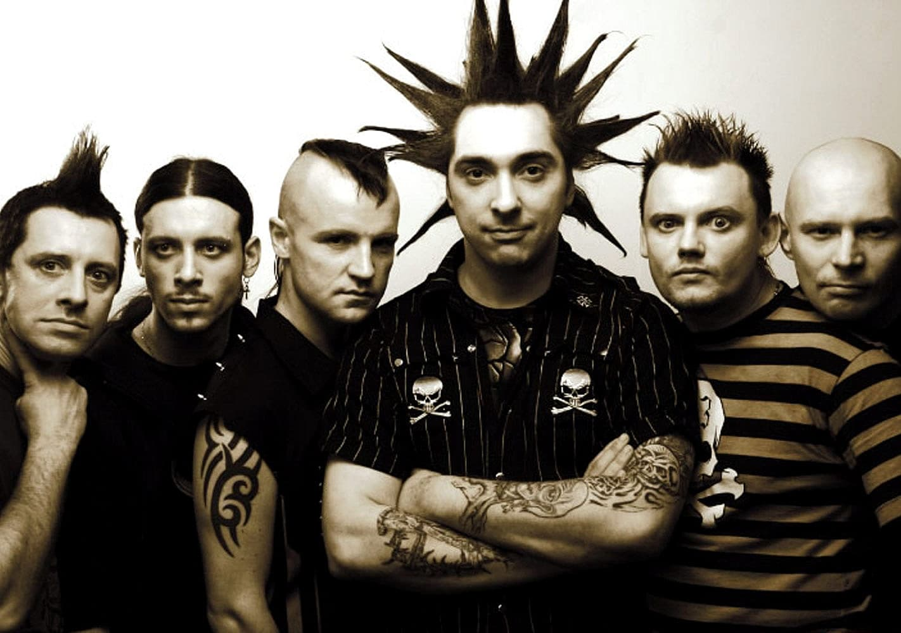

Рок-музыка – понятие, объединяющее целый ряд популярных музыкальных направлений. Само по себе слово rock в переводе с английского языка указывает на характерную особенность данного стиля. Оно обозначает «качать» или «укачивать», что указывает на динамичные, ритмичные ощущения или басы. Чтобы полноценно воссоздать ритмику рока в инструментальном составе обязательно присутствуют ударные, бас-гитара, электрогитара и клавишные. Ударный инструмент и бас-гитара четко создают ритм, который и есть рок - «кач». Электрогитара и клавиши добавляют драйва и музыкальности. Часто в роковом музыкальном произведении есть момент, когда все инструменты затихают, оставляя лишь электрогитару, которое играет неимоверное соло. Этот отрывок в композиции высоко ценится не только среди любителей и слушателей рока, но и среди самих музыкантов, так как во время соло, гитарист «не прикрыт» и не заглушен другими инструментами. Он не имеет права на ошибку, поэтому обычно, эти соло идеальны. Конечно же, не может быть музыкальной рок-группы без вокалиста. Обычно главный солист имеет сильный глубокий голос, который каждого проберет до самых костей. Помимо традиционного состава и инструментов в группе, можно услышать и более непривычные мотивы. Это происходит потому, что современный рок модернизируется, трансформируется и улучшается. Музыка отчасти изменяется для своего слушателя, чтобы не быть обычной и привычной. Чаще всего такие эксперименты увенчиваются успехом. К примеру, рок-группа может отыграть cover на народную или поп песню. Из инструментов может появиться скрипка, виолончель, сопилка, укулеле, акустическая гитара или фортепиано. Некоторые всемирно известные рок-музыканты исполняли концерт в сопровождении симфонических оркестров. Такой звук не может оставить равнодушным, поэтому они одни из самых дорогих и популярных во всем мире. Такие музыкальные трансформации привлекают огромное количество людей с абсолютно разными музыкальными предпочтениями. На концертах комбинированного рока с оркестром максимальная концентрация зрителей с огромной разницей в возрасте. Потому как такая музыка вызывает восторг не только у молодежи, но и у более зрелого поколения.

Это участники группы КиШ(Король и Шут) Это участники группы АнимациЯ